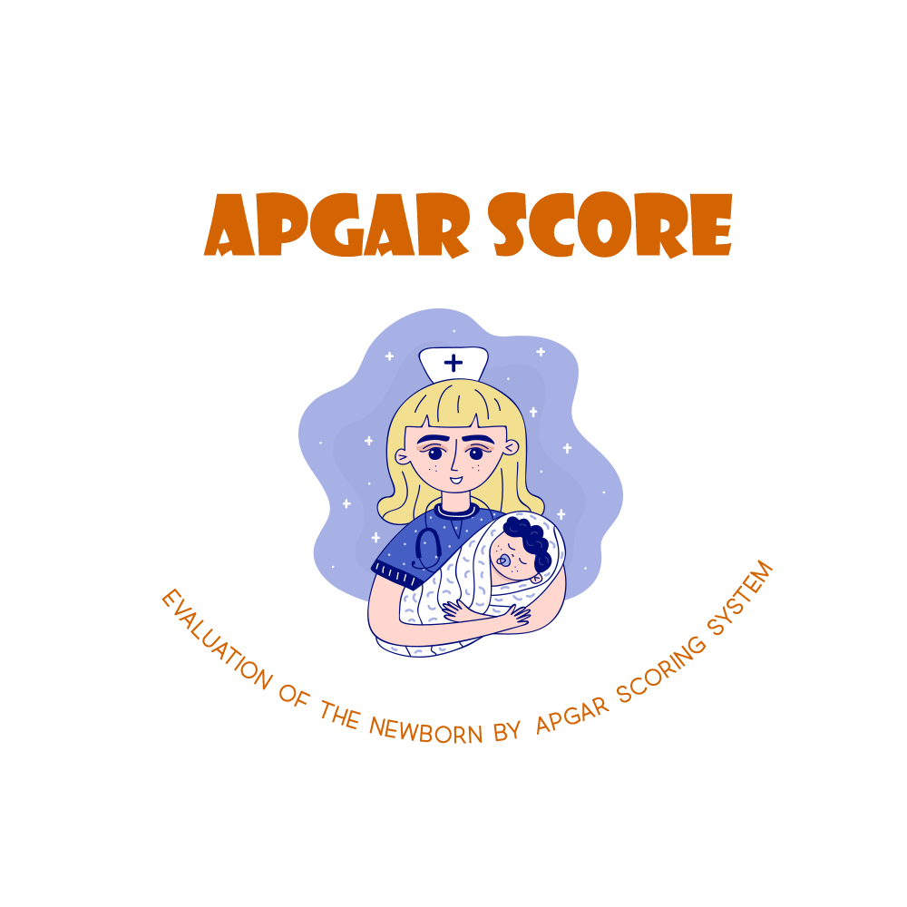

  
<ion-content padding class="background">
 
  <div id="container">
    
    <div class="spacer" style="width: 300px; height: 30px;"></div>
    <ion-button shape="round" fill="outline" size="large" id="login" routerLink="/login">เข้าสู่ระบบ</ion-button> <br> <br>
    <ion-button shape="round" fill="outline" size="large" id="register" routerLink="/register">ลงทะเบียน</ion-button><br>
  </div>
 
</ion-content>